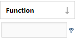
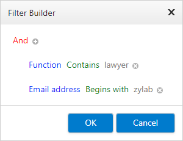

Group by dragging one or more column headers above the grid. You can also move them back to the grid.
Sort (ascending/descending) by clicking in the column header once.
Select
 for more information per shown result.
for more information per shown result.Select
 to hide this information again.
to hide this information again.Filter within a column with a search query. Select
 for all search options.
for all search options.
Edit combined filters by opening the Filter Builder. Click on the link in the bottom left.
Compose complex filters in the Filter Builder. You can edit all parts. For example, select 'Function' or 'Email address' to adjust the column which is filtered (there are different fields).

Delete all filters by clicking on Clear (bottom right).
There you can also adjust the number of shown results per page.

New Contact
Select
 (New) to add a new contact.
(New) to add a new contact.Fill out all fields and select Save.
Edit Contact
Select
 (Edit) next to a contact to edit it.
(Edit) next to a contact to edit it.Adjust the fields and select Save.
Delete Contact
Select
 (Delete) next to a contact to delete it.
(Delete) next to a contact to delete it.Confirm with OK.
Copy Contact
Select
 (Copy) next to a contact to copy it.
(Copy) next to a contact to copy it. Edit, when needed, one or more fields and select Save.